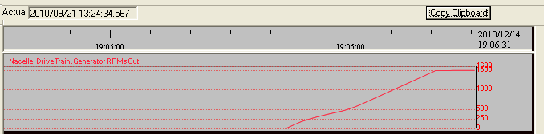
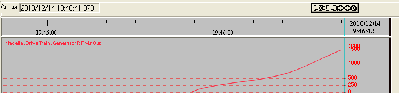
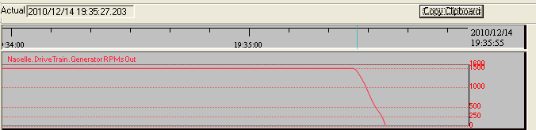
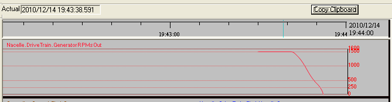

The "Moment of Inertia" of rotating systems is proportional to the rotating mass and to the square of the average radius.
You may change the "moment of inertia" of the DriveTrain of the simulator going to "Executing"->"Synoptics Control"->"Parameters" that will bring up the "Parameters" synoptic. There look for "Nacelle" "DriveTrainMomentOfInertia".
The moment of inertia of the DriveTrain include the moment of inertia of the Hub with Blades, the rotor, the gearbox and the generator.
Changing its value you may explore the behavior of the Wind Turbine when Blades are changed, or dirty, or when the gearbox is changed to another different model or manufacturer.
The main impact of any change of this parameter will be reflected in the evolution of the RPMs. The next figures show the evolution for the cases of 3500000 and 6000000 kg*m^2.

Figure 1. Ramp up of the RPMs with wind of 9 m/s and DriveTrainMomentOfInertia of 3500000 kf * m2

Figure 2. Ramp up of the RPMs with wind of 9 m/s and DriveTrainMomentOfInertia of 6000000 kf * m2
You can notice that the influence of this parameter is only in the beginning of the ramp, slower in the 6000000 case, as is logically expected. The time difference among these cases is merely around 10 seconds.
For the Cutout the figures are the following:

Figure 3. Ramp down of the RPMs for cutout with 9 m/s and DriveTrainMomentOfInertia of 3500000 kf * m^2

Figure 4. Ramp down of the RPMs for cutout with 9 m/s and DriveTrainMomentOfInertia of 6000000 kf * m^2